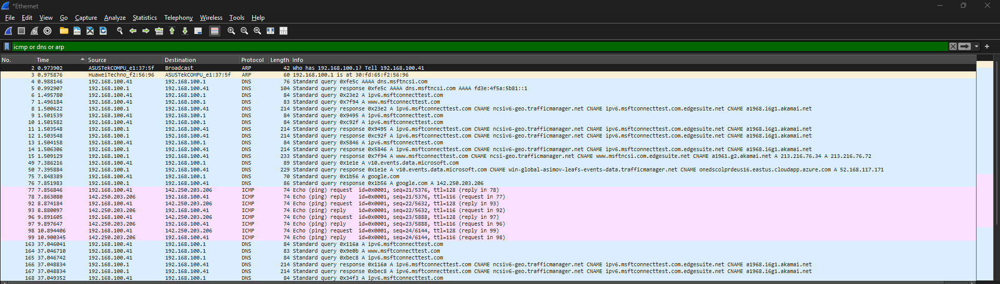
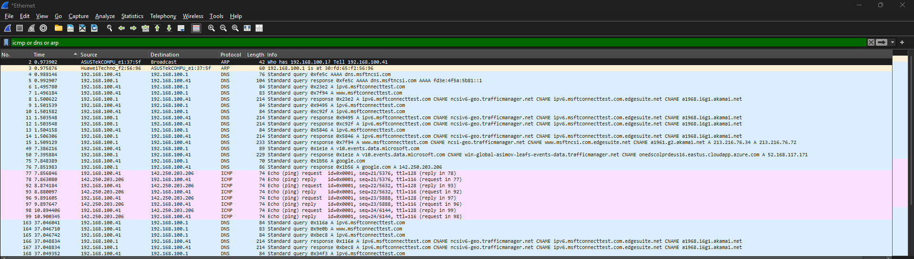
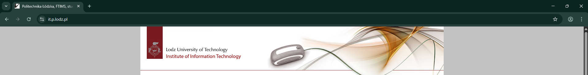

Assignment 1 - Practical Part
I. Ping command
 

Protocols :
ARP (Data link Layer) - Adress Resolution Protocol. Asks for MAC adress of device with IP adress 192.168.100.1
DNS (Application Layer) - Domain Name System translates google.com into 142.250.203.206. It runs over UDP (Transport layer)
ICMP (Network Layer) - Interner Control Message Protocol corresponds to Network layer. Echo Request to 142.250.203.206 and waits for an Echo Reply
II. Utilizing the SCP


Protocols :
SSHv2 (Application Layer) - Secure Shell version 2 is a secure network protocol that enables encrypted communication between client and a server. It supports Secure Copy Protocol. It runs over TCP (Transport Layer)
TLS1.3V (Presentation Layer) - protocol that secures communications over a computer network by encrypting data between a client and a server
III. Accessing webpage it.p.lodz.pl

Used Wireshark filters: dns.qry.name contains "it.p.lodz.pl" or tcp.port == 443 or tls or quic
dns.qry.name - filter traffic to see all queries for a specific domain
tcp.port == 443 - standard port for HTTPS
Protocols :
DNS (Application Layer) Runs over UDP(Transport Layer)
TCP (Transport Layer) - Transmission Control Protocol is a connection-oriented protocol that ensures reliable, ordered, and error-checked delivery of data between applications over a network
QUIC (Transport Layer) - It runs over UDP. Combines transport and security handshakees into one step
TLS1.3V (Presentation Layer)
IV. Accessing webpage studife.it.p.lodz.pl

Used Wireshark filters: dns.qry.name contains "studife.it.p.lodz.pl" or tcp.port == 80 or http
dns.qry.name - filter traffic to see all queries for a specific domain
tcp.port == 80 - standard port for HTTP
Protocols :
DNS (Application Layer)
TCP (Transport Layer)
HTTP (Application Layer) - HyperText Transfer Protocol HTTP defines how messages are formatted and transmitted, and how web servers and browsers should respond to various commands.